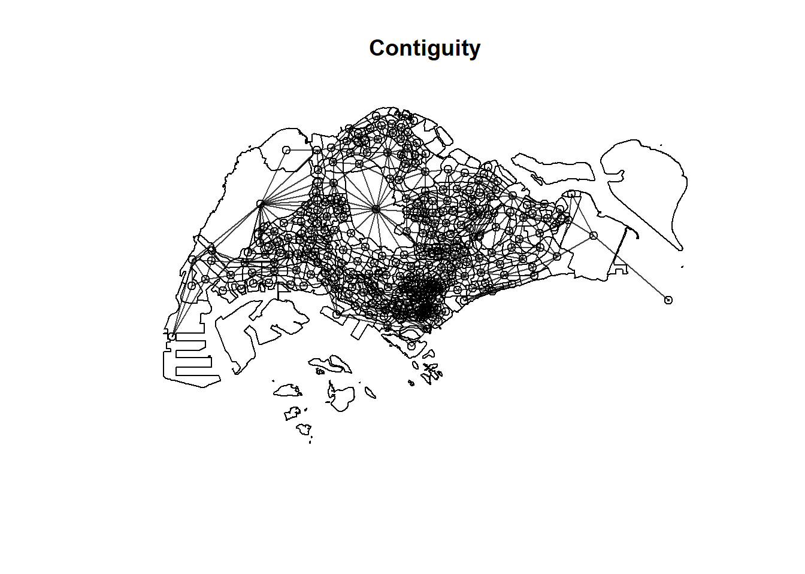
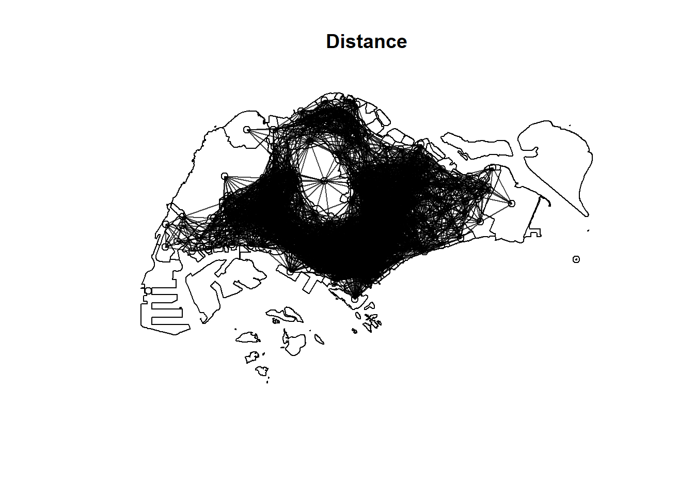
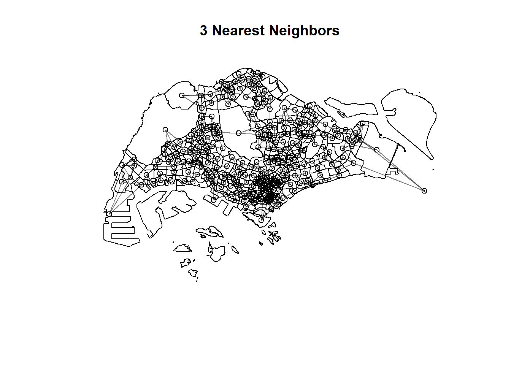

Spatial Interaction Models have often used to explain origin-destination (OD) flows that arise in fields such as public bus commuting. These models rely on a function of the distance between the origin and destination as well as explanatory variables pertaining to characteristics of both origin and destination locations. Spatial interaction models assume that using distance as an explanatory variable will eradicate the spatial dependence among the sample of OD flows between pairs of locations. The notion that use of distance functions in conventional spatial interaction models effectively captures spatial dependence in interregional flows has long been challenged. In view of the limitation Spatial Interaction Models to account for spatial dependence, Spatial Econometric Interaction Models have been introduce James P. LeSage and R. Kelley Pace (2009).
In this in-class exercise, you will gain hands-on exercise on using spflow package, a R library specially developed for calibrating Spatial Econometric Interaction Models. By the end of this in-class exercise, you will acquire the skills to:
extract explanatory variables from secondary source,
assemble and derive explanatory variables from publicly available geospatial data,
integrate these explanatory variable into a tidy variables tibble data.frame.
calibrate Spatial Econometric Interaction Models by using spflow.
Getting Started
In this exercise, the development version (0.1.0.9010) of spflow will be used instead of the released version (0.1.0). The code chunk below will be used to install the development version of spflow package.
devtools::install_github("LukeCe/spflow")
Using github PAT from envvar GITHUB_PAT
Downloading GitHub repo LukeCe/spflow@HEAD
── R CMD build ─────────────────────────────────────────────────────────────────
* checking for file 'C:\Users\Yizao\AppData\Local\Temp\RtmpSOTfjp\remotes59849f72fc8\LukeCe-spflow-df91367/DESCRIPTION' ... OK
* preparing 'spflow':
* checking DESCRIPTION meta-information ... OK
* installing the package to process help pages
Loading required namespace: spflow
* saving partial Rd database
* checking for LF line-endings in source and make files and shell scripts
* checking for empty or unneeded directories
* building 'spflow_0.1.0.9010.tar.gz'
Installing package into 'C:/Users/Yizao/AppData/Local/R/win-library/4.3'
(as 'lib' is unspecified)
Next, will will load spflow and other R packages into R environment.
Reading layer `BusStop' from data source
`D:\y1zaoWang\ISSS624\Take-home Exercise 2\data\geospatial'
using driver `ESRI Shapefile'
Simple feature collection with 5161 features and 3 fields
Geometry type: POINT
Dimension: XY
Bounding box: xmin: 3970.122 ymin: 26482.1 xmax: 48284.56 ymax: 52983.82
Projected CRS: SVY21
In this study, our analysis will be focused on planning subzone with bus stop. In view of this, the code chunk below will be used to perform Point-in-Polygon count analysis.
Simple feature collection with 314 features and 7 fields
Geometry type: MULTIPOLYGON
Dimension: XY
Bounding box: xmin: 2667.538 ymin: 21448.47 xmax: 55941.94 ymax: 50256.33
Projected CRS: SVY21 / Singapore TM
First 10 features:
SUBZONE_N SUBZONE_C PLN_AREA_N PLN_AREA_C REGION_N
1 INSTITUTION HILL RVSZ05 RIVER VALLEY RV CENTRAL REGION
2 ROBERTSON QUAY SRSZ01 SINGAPORE RIVER SR CENTRAL REGION
3 FORT CANNING MUSZ02 MUSEUM MU CENTRAL REGION
4 MARINA EAST (MP) MPSZ05 MARINE PARADE MP CENTRAL REGION
5 SENTOSA SISZ01 SOUTHERN ISLANDS SI CENTRAL REGION
6 CITY TERMINALS BMSZ17 BUKIT MERAH BM CENTRAL REGION
7 ANSON DTSZ10 DOWNTOWN CORE DT CENTRAL REGION
8 STRAITS VIEW SVSZ01 STRAITS VIEW SV CENTRAL REGION
9 MARITIME SQUARE BMSZ01 BUKIT MERAH BM CENTRAL REGION
10 TELOK BLANGAH RISE BMSZ15 BUKIT MERAH BM CENTRAL REGION
REGION_C geometry BUSSTOP_COUNT
1 CR MULTIPOLYGON (((28481.45 30... 2
2 CR MULTIPOLYGON (((28087.34 30... 10
3 CR MULTIPOLYGON (((29542.53 31... 6
4 CR MULTIPOLYGON (((35279.55 30... 2
5 CR MULTIPOLYGON (((26879.04 26... 1
6 CR MULTIPOLYGON (((27891.15 28... 10
7 CR MULTIPOLYGON (((29201.07 28... 5
8 CR MULTIPOLYGON (((31269.21 28... 4
9 CR MULTIPOLYGON (((26920.02 26... 21
10 CR MULTIPOLYGON (((27483.57 28... 11
Notice that there are 313 planning subzone in this sf object.
Preparing the Spatial Weights
There are three different matrices that can be used to describe the connectivity between planning subzone. They are: contiguity, fixed distance and adaptive distance.
Code chunk below will be used to compute the three spatial weights at one goal.
$by_contiguity
Neighbour list object:
Number of regions: 314
Number of nonzero links: 1904
Percentage nonzero weights: 1.931113
Average number of links: 6.063694
$by_distance
Neighbour list object:
Number of regions: 314
Number of nonzero links: 15422
Percentage nonzero weights: 15.64161
Average number of links: 49.11465
2 regions with no links:
152 314
3 disjoint connected subgraphs
$by_knn
Neighbour list object:
Number of regions: 314
Number of nonzero links: 942
Percentage nonzero weights: 0.955414
Average number of links: 3
Non-symmetric neighbours list
Code chunks below will be used to plot the spatial weights in mpsz_nb.
plot(st_geometry(mpsz))plot(mpsz_nb$by_contiguity, centroids, add = T, col =rgb(0,0,0,alpha=0.5))title("Contiguity")

plot(st_geometry(mpsz))plot(mpsz_nb$by_distance, centroids, add = T, col =rgb(0,0,0,alpha=0.5)) title("Distance")

plot(st_geometry(mpsz))plot(mpsz_nb$by_knn, centroids, add = T, col =rgb(0,0,0,alpha=0.5))title("3 Nearest Neighbors")

When you are happy with the results, it is time to save mpsz_nb into an rds file for subsequent use by using the code chunk below.
Warning in left_join(odbus6_9, busstop_mpsz, by = c(ORIGIN_PT_CODE = "BUS_STOP_N")): Detected an unexpected many-to-many relationship between `x` and `y`.
ℹ Row 25632 of `x` matches multiple rows in `y`.
ℹ Row 673 of `y` matches multiple rows in `x`.
ℹ If a many-to-many relationship is expected, set `relationship =
"many-to-many"` to silence this warning.